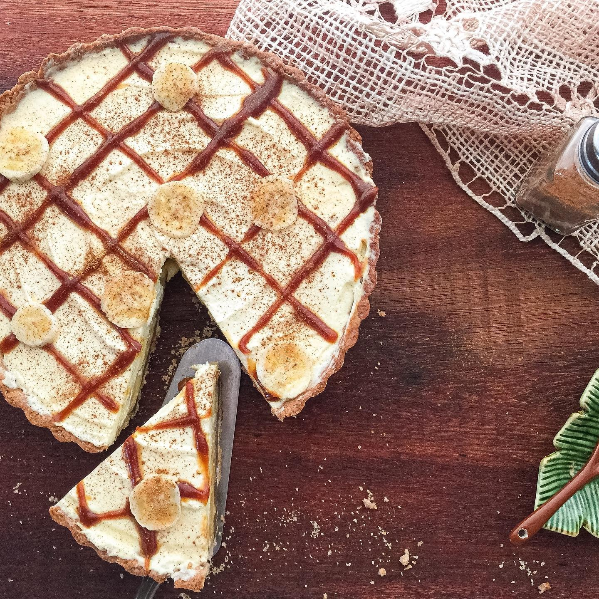

Banoffee
A torta inglesa com gostinho de casa de vó ganhou presença garantida por aqui. Camadas de massa amanteigada com canela, doce de leite, bananas madurinhas e chantilly de nata criam um equilíbrio doce, cremoso e acolhedor.
O caramelo salgado no topo traz uma surpresa delicada e deixa cada fatia ainda mais charmosa. Aviso carinhoso: é daquelas receitas que pedem repeteco.
Ver mais